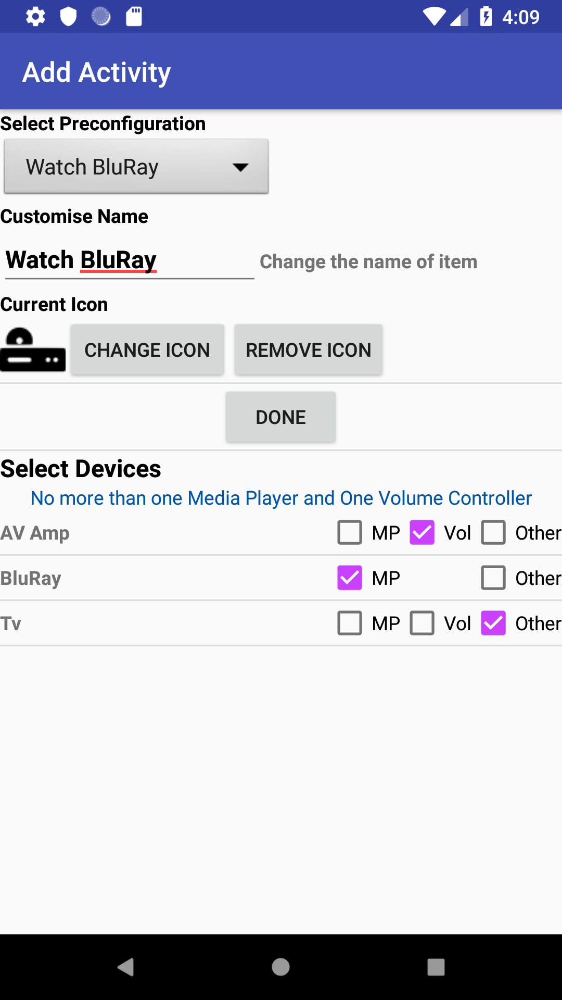

    <div class="container content">
      {% assign prev_page = "Edit Device Key" %}
      {% assign prev_href = "editdevicekey.html" %}
      {% assign next_page = "Edit Activity" %}
      {% assign next_href = "editactivity.html" %}
      {% include usergnav.html %}

      <div class="row">
        <div class="col-lg-7">
          <h2 class="page-title">Create Activity</h2>
          <p>An Activity combines a number of Devices to provide a 'super' remote control. You are able to add <a href="customkey.html">custom keys</a> to an <a href="activityremote.html">Activity Remote</a> that can send key sequences to one or more devices.</p>
          <p>To navigate to the <i>Add Activity</i> view, click on the menu icon (&#9776;) at the top left corner of the main screen; then, in the Activity section of the menu, click <i>Add</i>.</p>
          <p>Here you need to decide:</p>
          <ul id="bullets">
            <li>The name of the activity you are adding,</li>
            <li>The icon that should be displayed in the <a href="navigation.html">Navigation Bar</a> for this item,</li>
            <li>The Devices associated with this Activity.</li>
          </ul>
          <p>You can select a <i>pre-configuration</i> setting; if you do this then the Activity name and icon will be automatically selected for you. Alternatively you can enter your own name for the Activity and/or <a href="changeicon.html">select the icon</a> you want to use by pressing the <i>Change Icon</i> button.</p>
          <p>The bottom part of this view contains a list of Devices which you have added. (from the LIRC Subsystem); you should select the devices you wish to include in your Activity. </p>
          <p>When selecting the devices you should indicate if the device is a 'Media Player' (MP), a 'Volume Controller' (Vol), Both, or something else ('Other').</p>
          <p>The 'Media Player' is the Device in your Activity which undertakes Media Playback (eg BluRay Player or Kodi Box). The initial <a href="activityremote.html">Activity Remote</a> will be based on this Device if you specify one.</p>
          <p>The 'Volume Controller' is the Device in your Activity which controls the volume; this device should contain Volume Up/Down controls and Mute control (See <a href="keyguide.html">the Key Guide</a>).</p>
          <p>If the device is neither a 'Media Player' nor a 'Volume Controller' select 'Other'</p>
          <p><b>Important:</b> any number of Devices can be designated as 'Other'; but there can be only one 'Media Player' and one 'Volume Controller' per Activity. 'Other' is mutually exclusive to 'Media Player and 'Volume Controller'.</p>
          <p>Once you have populated all the required fields in this view, a <i>Done</i> button will appear. Press this to complete the process.</p>
          <p>Pushing the <i>Back</i> button at any time will cancel the operation.</p>
        </div>
        <div class="col-lg-5">
          <div class="row spacer6 d-none d-lg-block"></div>
          <p class="aligncenter"></p>
        </div>
      </div>
      {% include usergnav.html %}
    </div>

